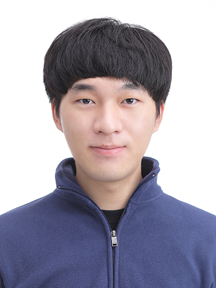

Keon Hee Park

I am a Ph.D. student, working on continual learning, domain adaptation, and category discovery for robust visual recognition under distribution shifts.
📧 Email:
keonhee.park@vision.snu.ac.kr
Publications
[8] Detecting Unknown Objects via Energy-based Separation for Open World Object Detection
[7] SFUOD: Source-Free Unknown Object Detection
[6] Universal Domain Adaptation for Semantic Segmentation
[5] CED: Comparing Embedding Differences for Detecting Out-of-Distribution
and Hallucinated Text
[4] Online Continuous Generalized Category Discovery
[3] Pre-trained Vision and Language Transformers Are Few-Shot Incremental Learners
[2] Open Set Domain Adaptation for Semantic Segmentation
[1] Online Class Incremental Learning on Stochastic Blurry Task Boundary
via Mask and Visual Prompt Tuning